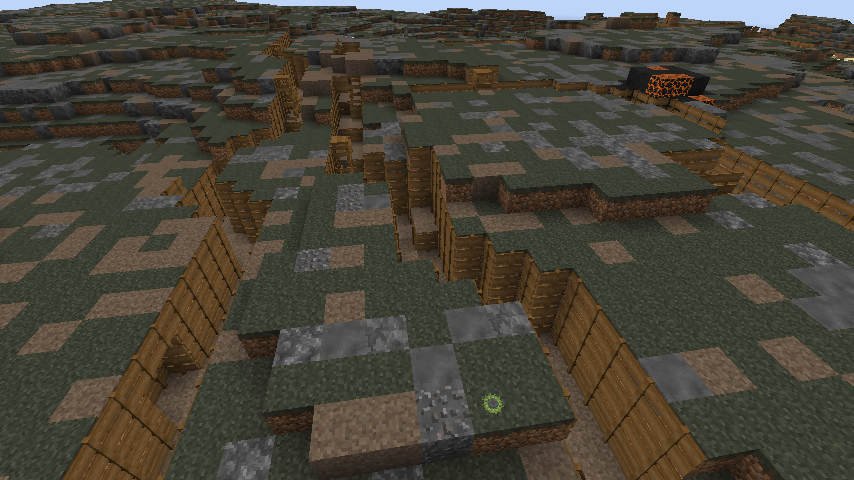

Blogcat's Bob
If you still remember
An eternity ago I wrote a blog post about enemy design, with some going over additions to glyphids. While not much has come of it just yet, the idea of changing glyphids in some fundamental way stuck. Right now, they generate these unsightly blobs all over the place, with the density being not all that meaningful - if you clear out nearby nests early on, they will never be an issue.This gave me an idea, what if instead of having glyphid hives all over the place, why not have a dedicated biome where they spawn with some actual density? But there would have to be an incentive for players to go there, and ideally to build an outpost there too. Higher bedrock ore yields? A new resource? Who knows.
And now: Landmines
Right around the same time, someone brought up the possibility of having landmines spawn less frequently, but having mine fields as part of world gen. This would concentrate the danger, causing fewer random explosions in supposed safe areas, and provide a challenge if people wanted to go there, for whatever reason. While probably incredibly easy to implement, this idea too didn't really go anywhere yet, mostly because I haven't bothered to figure out a proper reward yet. Mines aren't a persistent threat, once detonated or defused they are out of the picture and do not respawn, so it's harder to come up with something compared to a glyphid biome.Zomblets
A few months ago I added undead soldiers. Mostly to have a proper enemy that could use guns, rather than just pollution-dependant skeletons. While still incredibly primitive, the mobs do work, so what to do with them? Their current utility is to guard spire structures which hold pieces for the Aberrator, but I feel like we aren't using them to the fullest potential just yet.The armor worn by the soldiers is "Taurun armor", which is a bit of mostly unused lore sprinkled over there. Which begs the question, if we had a second nation's armor set, could we have the undead soldiers fight each other? To create a proper warzone?
The scumlands
And that's where the no man's land biome comes into play. A permanently hazardous area with factions of soldiers locked in an eternal stalemate. The landscape is flat, mostly petrified and blasted to hell, with trenches all over the place. Duds, which right now are sort of common, would become rare, while being abundant in no man's land. Barbed wire, landmines and the occasional artillery strike would complete the picture.By hacking together some of the previous ideas with a ton of stuff we already have, we can now accurately simulate what hell is like:  These are screenshots of NTM's experimental branch. The landscape is currently rather uninteresting, there's no mines (addendum: I just noticed one of the random mines happened to spawn in one of the pictures, lmao) or barbed wires, dead trees or bombed out buildings. The trenches are unfinished, but the concept does work for the most part. And you will find there's no mobs constantly blasting each other, the second faction does not exist yet.
There's currently some issues with the structure generation that need to be ironed out, and the entire thing isn't high priority which is why it's fermenting on another development branch, but I am more than confident that it will work.
< i'm leaving, googbye